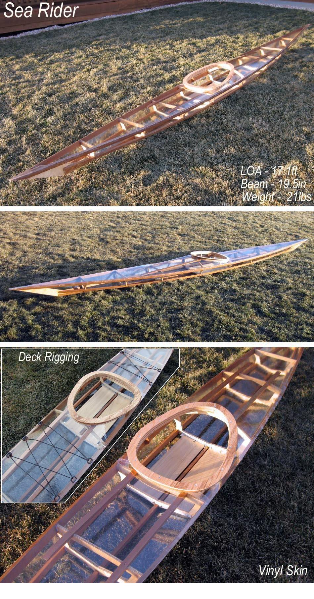

| (New) Sea Rider by Tom Yost (US) | Menu Previous Page Next Page |
|

The non-folding wood frame Sea Rider has a clear Vinyl Skin. Complete building instructions will be added soon. Any of the designs in the manual can be built using this non-traditional wood technique. The following Link to the Designs Menu contains wood frame "Sea Rider" pics.
Use the {BACK} key to return.
|
|